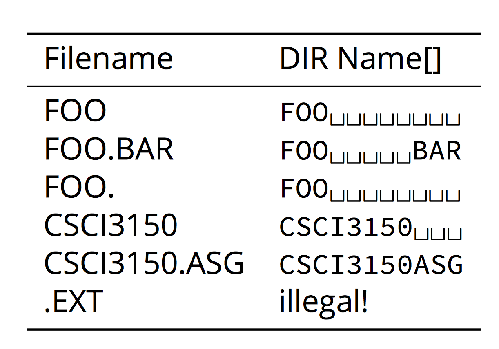

8+3 File Name
It is a standard of a filename used by FAT system.
Filenames are limited to at most 8 characters, followed by file extension of a period '.' and at most 3 characters.
In the Dir Entry header, it is defined as:
#define MSDOS_NAME 11 /* maximum name length */
__u8 name[MSDOS_NAME];/* name and extension */
That's mean the size of the filename array is 11. Here are some examples of 8+3 filenames that stored inside the array.

File Deletion and File name
In FAT32, deleting a file does not mean to remove from the filesystem. It only deallocates the space that the file originally occupied and deletion is marked. In this case, the first character of the filename is marked with a special 0xe5.